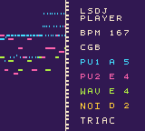

Create a standalone Game Boy player ROM.
Custom sample kits are taken from this ROM.
64 or 128 KiB.
Choose a ROM and save to continue.
Files stay in your browser. Output supports DMG and CGB.
Experimental: audio is not yet bit-exact with LSDj. Test results.

JavaScript is required to generate a ROM locally.